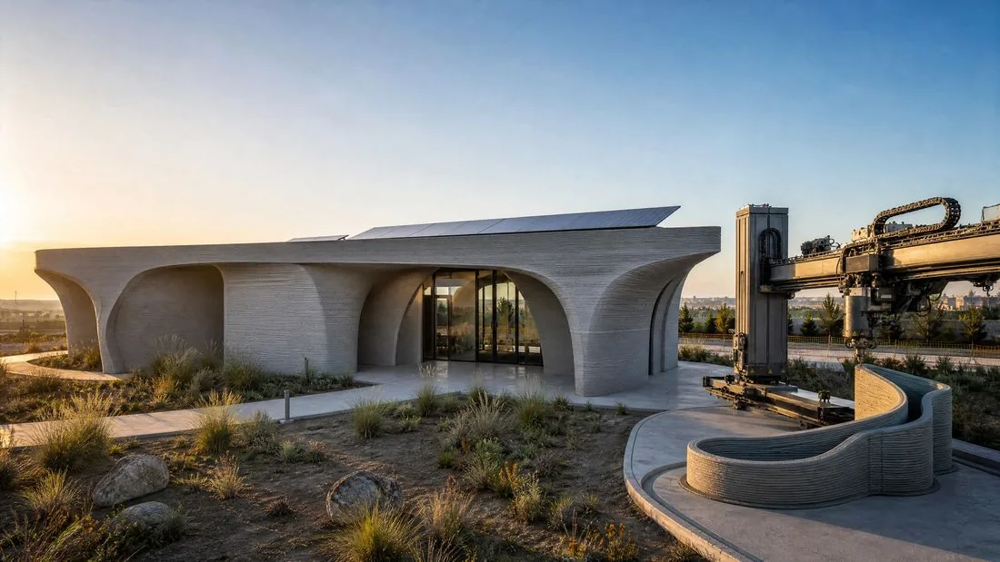
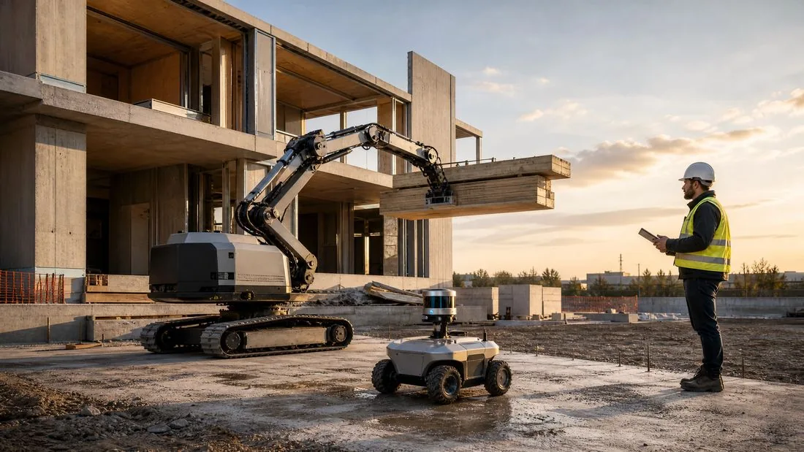

บทความ
การพิมพ์ 3ดิมิติเชิงและหุ่นยนต์ก่อสร้าง

ภาคการก่อสร้างซึ่งเป็นหนึ่งในอุตสาหกรรมที่เข้าสู่ระบบดิจิทัลน้อยที่สุดกำลังผ่านการเปลี่ยนแปลงอย่างรวดเร็ว ด้วยการเติบโตของตลาดการพิมพ์ 3ดิมิติอาคาร การทำงานอัตโนมัติไม่ใช่เรื่องแปลกในห้องแลบอีกต่อไป แต่เป็นความจริงบนไซต์งานก่อสร้างทั่วโลก
การพิมพ์ 3ดิสีเมนต์ : อิสระในการออกแบบเพื่อประสิทธิภาพ
การพิมพ์ 3ดิสีเมนต์ทำให้สร้างโครงสร้างที่ลื่นไหลโดยไม่ต้องใช้แบบหล่อเทคนิคนี้ให้ความแม่นยำสูงและลดการสูญเสียวัสดุได้อย่างมาก นอกเหนือจากความสวยงาม แนวทางนี้ยังเป็นคำตอบที่เป็นรูปธรรมต่อวิกฤตการณ์ที่อยู่อาศัย โดยชุมชนทั้งย่านถูกสร้างภายในไม่กี่วัน

หุ่นยนต์ก่อสร้าง : ความแม่นยำ ความปลอดภัย และผลิตภาพ
ควบคู่ไปกับการพิมพ์ 3ดิ หุ่นยนต์รุ่นใหม่รับหน้าที่งานที่หนักหน่วงหรืออันตรายที่สุดในไซต์งาน ตั้งแต่การก่ออิฐที่สม่ำเสมอไปจนถึงโดรนติดตามความคืบหน้างาน การทำงานอัตโนมัตินี้ช่วยเพิ่มผลิตภาพโดยรวมของภาคอย่างชัดเจน พร้อมลดความเสี่ยงของทีมงาน

บทบาทใหม่ของสถาปนิก
การทำงานอัตโนมัตินี้ไม่ได้แทนที่สถาปนิก แต่เปลี่ยนบทบาทของอาชีพ การเชี่ยวชาญเครื่องมือออกแบบเชิงสร้างสรรค์และการเขียนโปรแกรมกำลังสำคัญพอๆ กับความรู้ด้านวัสดุ
บทสรุป
การพิมพ์ 3ดิและหุ่นยนต์เป็นจุดเริ่มต้นของสถาปัตยกรรมในยคอุตสาหกรรมที่ผลิตแบบเฉพาะบุคคล การก่อสร้างอาคารไม่ใช่เพียงงานก่ออิฐต่อไปแล้ว